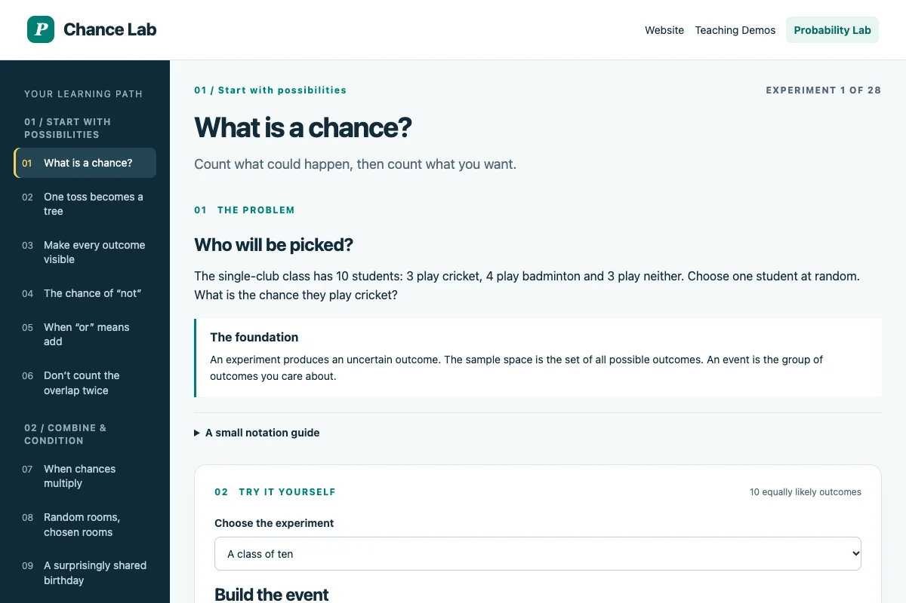
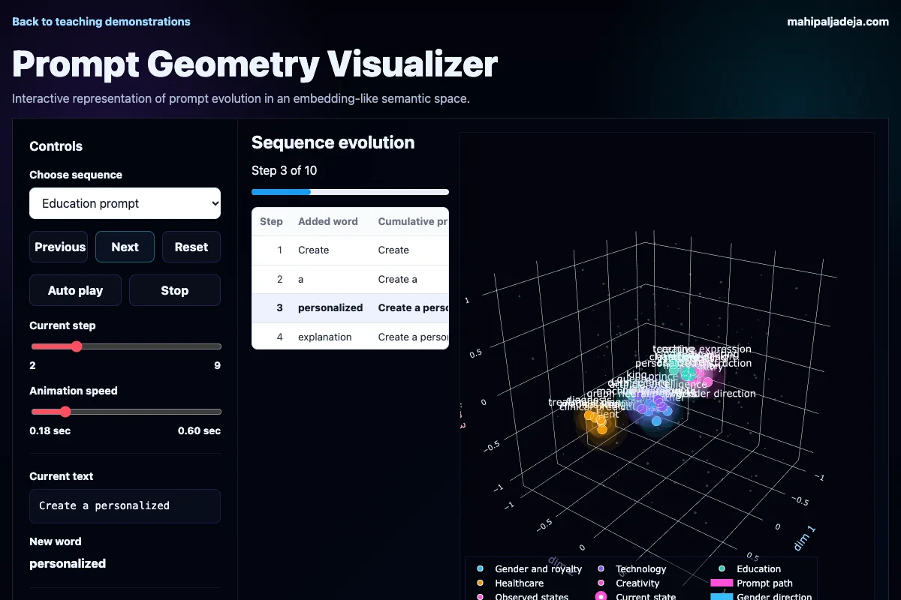
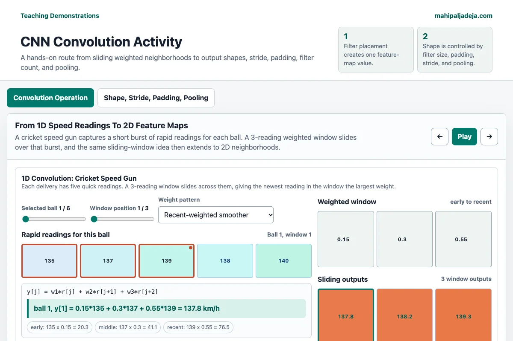

Mathematics
Probability Lab
Explore probability through experiments, simulation, and visual reasoning.
Open the interactive labExplore the teaching demonstrations. Change parameters, test an intuition, and follow the idea wherever it leads.

Explore probability through experiments, simulation, and visual reasoning.
Open the interactive labInvestigate derivatives, curvature, optimization, and connections to neural networks.
Open the interactive labBuild intuition for the ideas behind artificial intelligence through small interactive activities.
Open the interactive lab
See how context and constraints shape the space of possible AI responses.
Open the interactive labUnpack how a custom GPT brings together instructions, knowledge, tools, and a learner’s question.
Open the interactive lab
Explore how image filters and convolution reveal patterns in visual data.
Open the interactive labMake abstract ideas in discrete mathematics easier to reason about in the classroom.
Open the interactive labWork through logical reasoning and inference with interactive explanations.
Open the interactive labExplore a structured approach to AI-era curriculum design and learning activities.
Open the interactive labHave an idea for an AI workshop, a research conversation, or a learning initiative? I would love to hear about it.